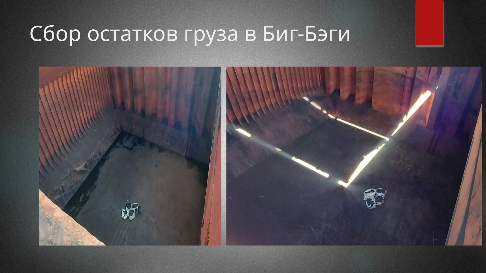
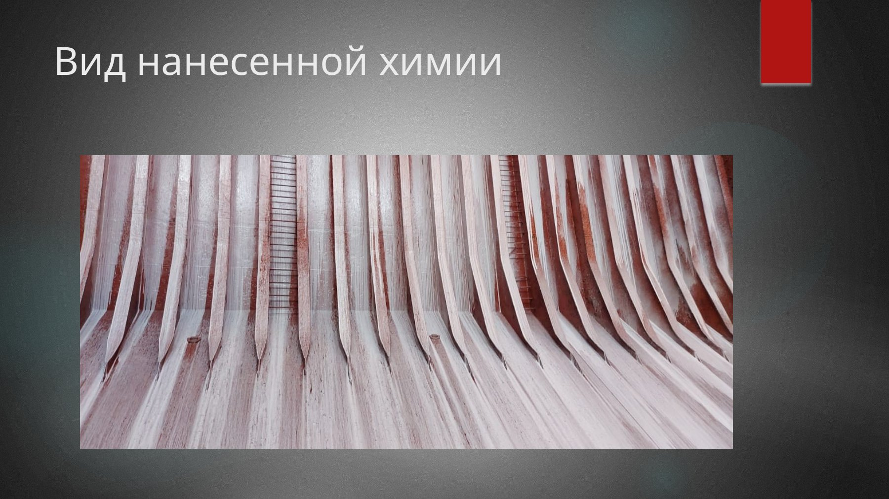
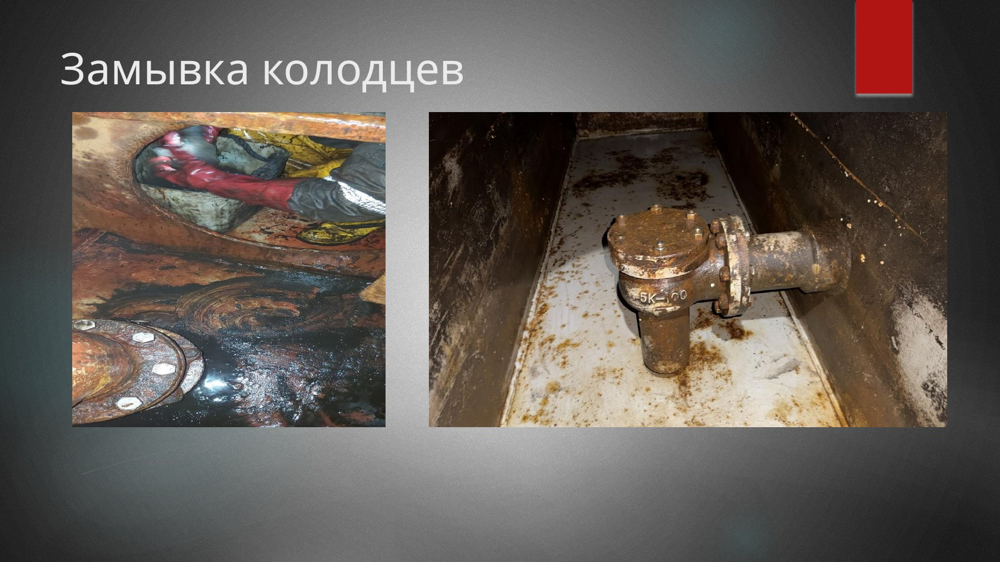

What “Fail” Usually Means in PracticeЧто обычно означает “fail” на практике
A failed hold cleanliness inspection is rarely about one dramatic defect. More often it is the result of several weak signals coming together: one doubtful bilge, one smell pocket, one dirty bracket line, one wet corner, one fresh paint note, and one officer who cannot explain what was checked.
Failed hold cleanliness inspection редко случается из-за одного драматичного дефекта. Чаще это результат того, что несколько слабых сигналов сходятся вместе: один сомнительный bilge, один smell pocket, одна грязная линия по brackets, один мокрый угол, одна свежая paint note и один офицер, который не может объяснить, что реально было проверено.
The Main Failure RoutesГлавные routes к fail
Bulk surfaces improved, but residues remain under pipes, behind guards, in bracket toes, or high corners.
Bulk surfaces улучшены, но residues остались под трубами, за защитами, в bracket toes или в верхних углах.
Bilges look secondary to the crew, but they look central to the surveyor.
Bilges кажутся экипажу второстепенными, а сюрвейеру — центральными.
Dirty hatch undersides, coamings, drain channels, or poor hatch integrity make the cleaned hold look unstable.
Грязные hatch undersides, coamings, drain channels или слабая hatch integrity делают cleaned hold недостоверным.
Crews call survey too early, before drying, smell-out, and hidden moisture are actually controlled.
Экипажи вызывают survey слишком рано, до того как drying, smell-out и hidden moisture реально взяты под контроль.
Fresh paint raises suspicion if it smells, hides defects, or looks like a shortcut instead of genuine readiness work.
Свежая краска вызывает подозрение, если пахнет, скрывает дефекты или выглядит как shortcut вместо genuine readiness work.
No photos, no progress logic, no explanation of resource limits. The ship then looks careless instead of overloaded.
Нет фото, нет progress logic, нет объяснения resource limits. Судно выглядит careless, а не overloaded.
How a Hold Moves from “Almost Ready” to “Rejected”Как hold переходит из “почти ready” в “rejected”
Visual ImprovementVisual improvement
The hold looks far better than before, so the team feels the job is basically done.
Hold выглядит значительно лучше, и команда чувствует, что работа по сути закончена.
Critical Details SkippedКритические детали пропущены
Bilges, hidden corners, hatch undersides, drain channels, and smell pockets remain weak.
Bilges, hidden corners, hatch undersides, drain channels и smell pockets остаются слабыми местами.
Survey Called Too EarlySurvey вызван слишком рано
The ship wants confirmation before it has a defendable operational story.
Судно хочет confirmation раньше, чем у него появилась defendable operational story.
Trust Breaks FastДоверие ломается быстро
Once the surveyor finds one serious weak point, the rest of the hold is judged through distrust.
Как только сюрвейер находит одну серьёзную слабую точку, весь остальной hold оценивается уже через призму distrust.
Three Visual Signals Surveyors Read QuicklyТри визуальных сигнала, которые сюрвейер считывает быстро



Questions a Chief Mate Should Ask Before Calling SurveyВопросы, которые старпом должен задать себе до вызова survey
ConclusionВывод
Holds do not fail inspection because crews are lazy by default. They fail because weak systems produce weak endings: late planning, poor segregation between cleaning and maintenance, untrusted bilges, rushed drying, and survey requests made before the ship has a believable operational position.
Holds fail'ятся не потому, что экипажи по умолчанию ленивы. Они fail'ятся потому, что слабые системы дают слабый финал: позднее planning, плохое разделение cleaning и maintenance, недостоверные bilges, rushed drying и вызов survey раньше, чем у судна появляется believable operational position.
The strongest chief mate is not the one who creates the cleanest theater. It is the one who knows when the hold is genuinely ready, when it is still weak, and when the ship must ask for support instead of pretending.
Сильный старпом — не тот, кто создаёт самый красивый театр чистоты. Сильный старпом — тот, кто понимает, когда hold действительно ready, когда он ещё weak, и когда судну нужно просить support, а не pretending.